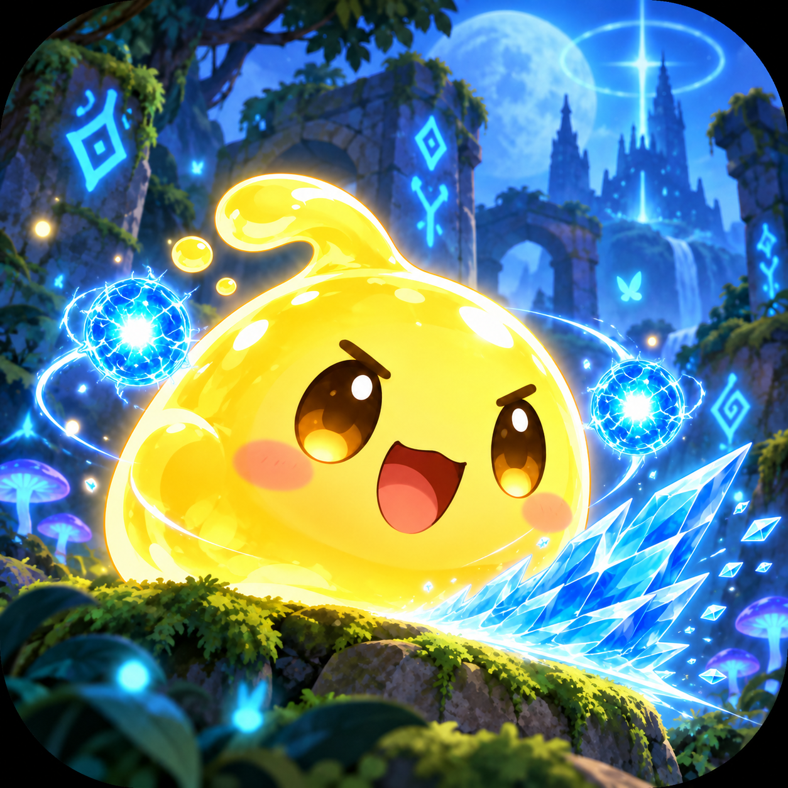

구현 이력
캐릭터·전투
플레이어 조작, 공격·피격 처리, 몬스터 AI를 구현했습니다.
PROJECT 01 / Slime Raising
몬스터를 처치하고, 스킬을 조합하고, 더 강한 슬라임으로 성장합니다.
매번의 전투와 영구 성장을 연결한 모바일 로그라이크 RPG입니다.

01 / GAME OVERVIEW
지속적으로 등장하는 몬스터를 처치해 경험치를 얻고, 무작위로 제공되는 액티브 스킬과 패시브 능력을 조합합니다.
웨이브·라운드별 전투와 이벤트, 보스전을 거쳐 얻은 보상은 다음 플레이를 위한 영구 성장으로 이어집니다.
02 / GAMEPLAY
03 / MY CONTRIBUTIONS
기획부터 게임플레이 시스템까지 단독으로 개발했습니다.
플레이어 조작, 공격·피격 처리, 몬스터 AI를 구현했습니다.
액티브 스킬, 패시브 능력, 영구 능력 강화를 구현했습니다.
웨이브, 라운드, 이벤트, 보스 전투를 하나의 진행 흐름으로 연결했습니다.
UI 애니메이션, 사운드 설정, 한국어·영어 로컬라이제이션과 사용자 정보 저장을 구현했습니다.
04 / CORE SYSTEMS
플레이 흐름
캐릭터·전투·스킬·게임 진행을 기능별로 나눠 유지보수를 고려했습니다.
게임 데이터를 ScriptableObject로 관리하는 구조를 적용했습니다.
오브젝트 풀링을 적용해 리소스 관리를 고려했습니다. 성능 측정 수치는 공개 자료에 없습니다.
05 / DEVELOPMENT & PROBLEM SOLVING
06 / PROJECT RESOURCES
KEEP EXPLORING